Beyond-Diagonal RIS-aided Outdoor-to-Indoor mmWave Communications
Research focus. How should an outdoor base station and a reconfigurable surface be jointly optimized to serve indoor mmWave users when walls and blockages weaken their signals? We compare RIS connection architectures, optimization methods, and their effects on data rate, runtime, and outage.
Connection types: FC allows interconnections among all RIS elements; GC connects elements within separate groups; SC controls elements individually. WSR (weighted sum rate) is the total of the users' rates after applying their assigned weights; higher values indicate better aggregate performance.
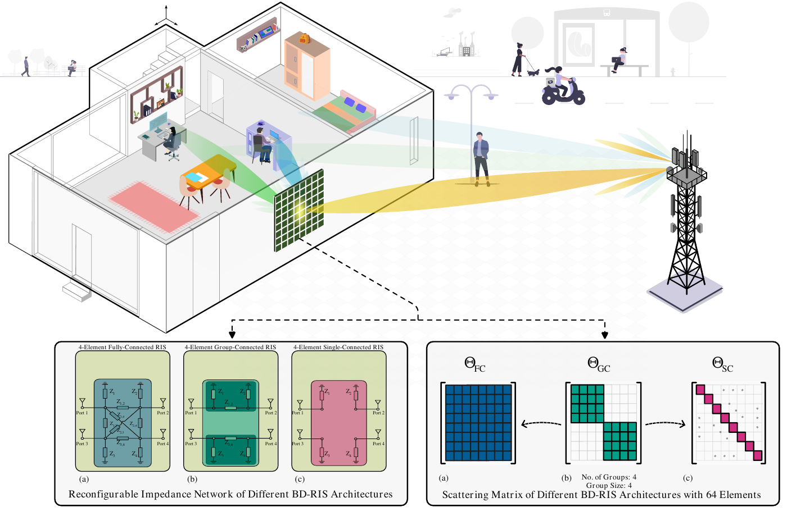
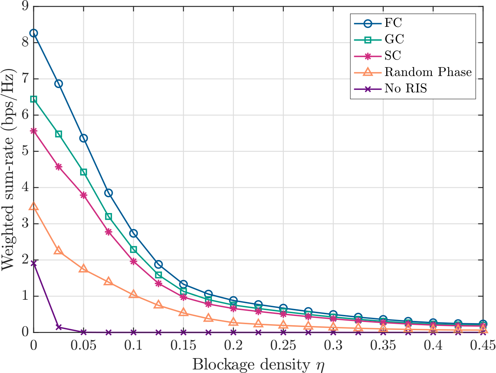
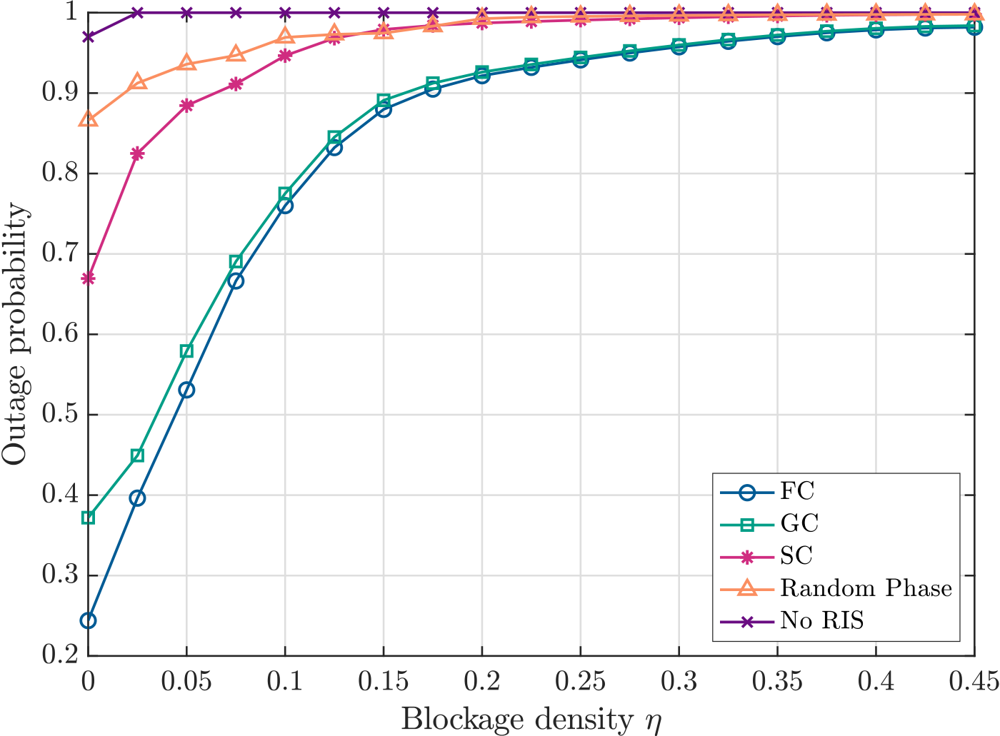
Click any figure to view the full-resolution PDF.
Explore other simulation results (9)
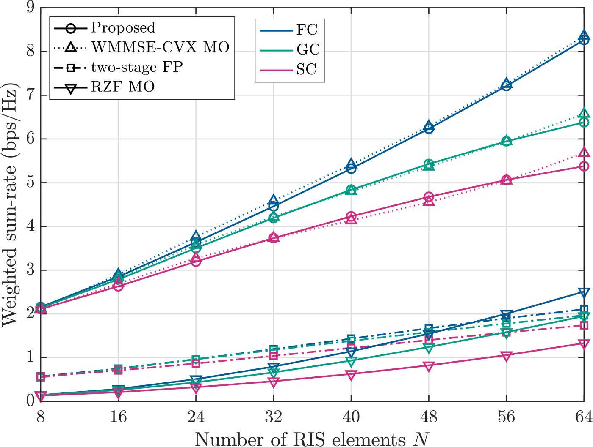
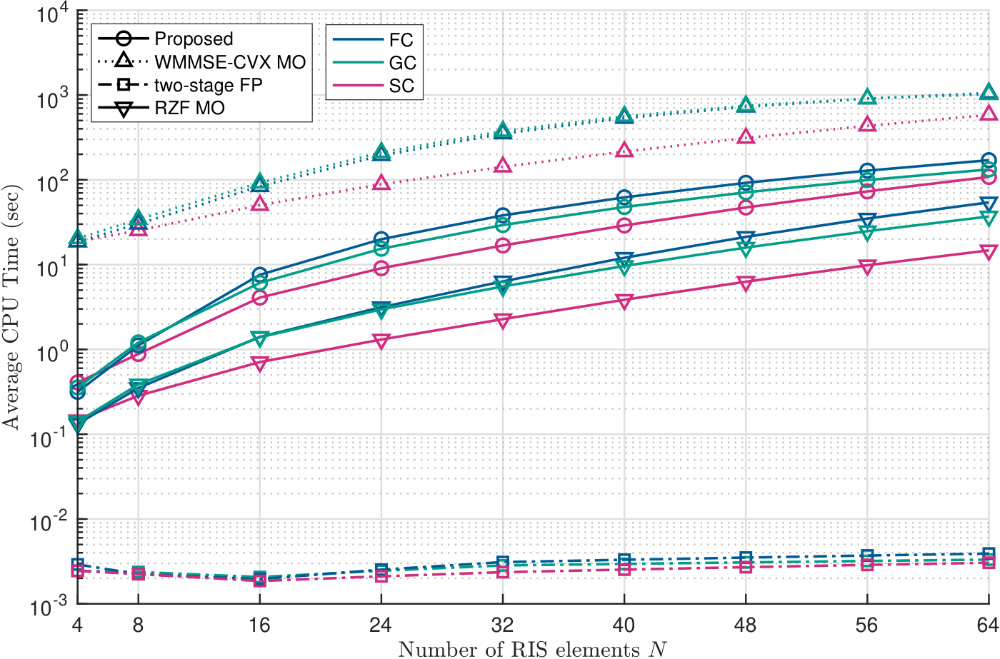
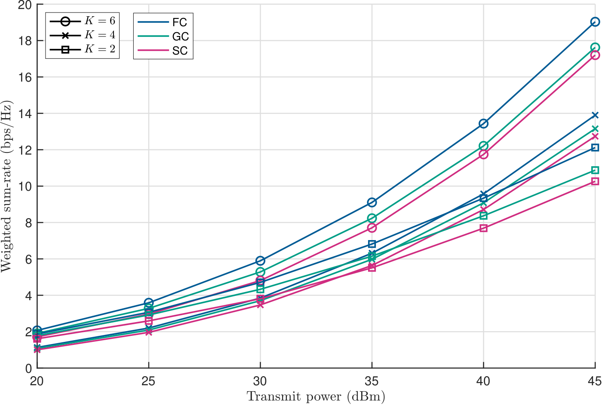
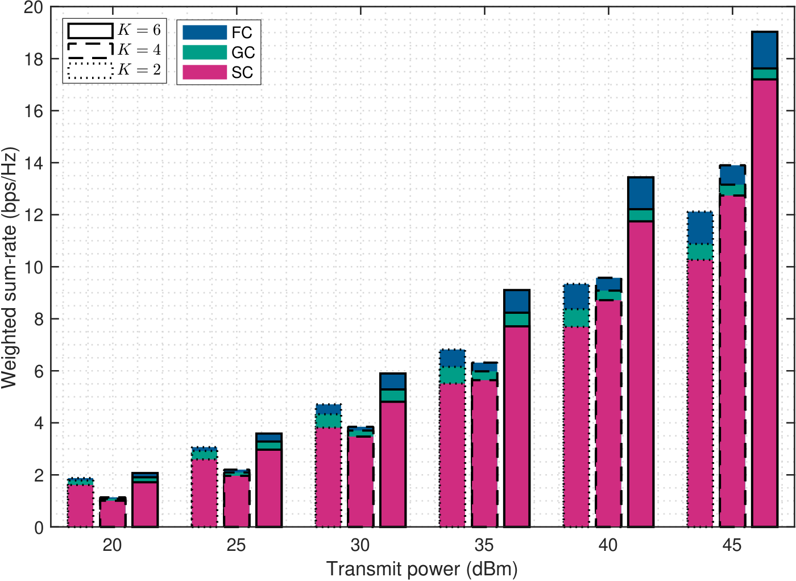
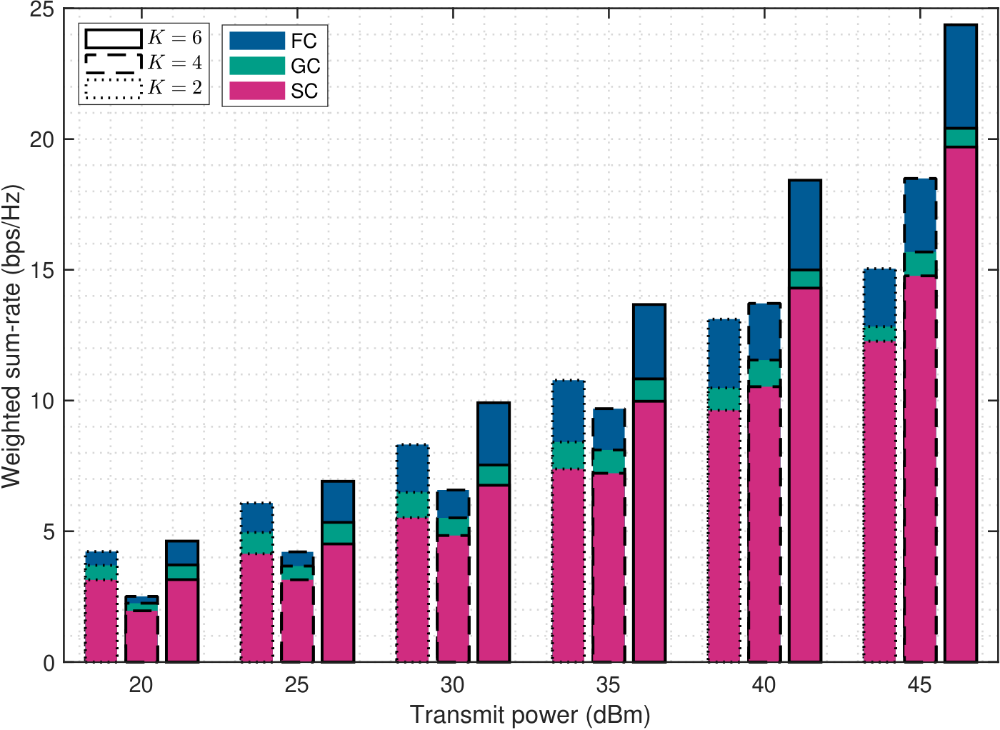
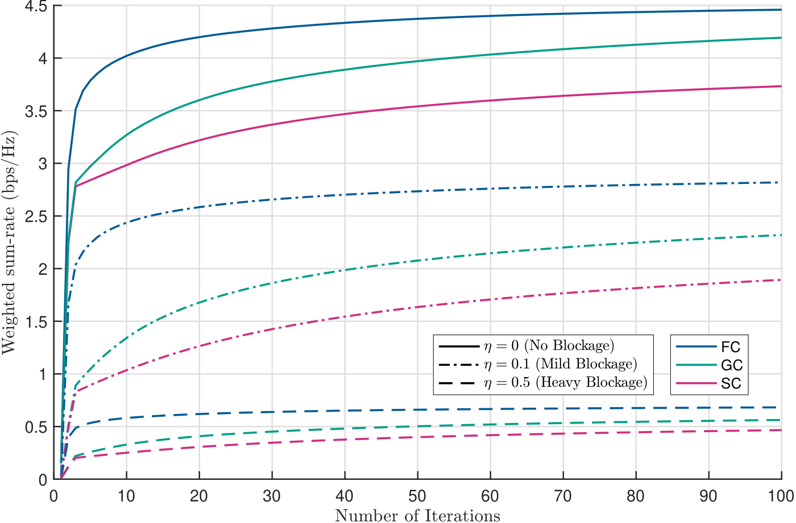
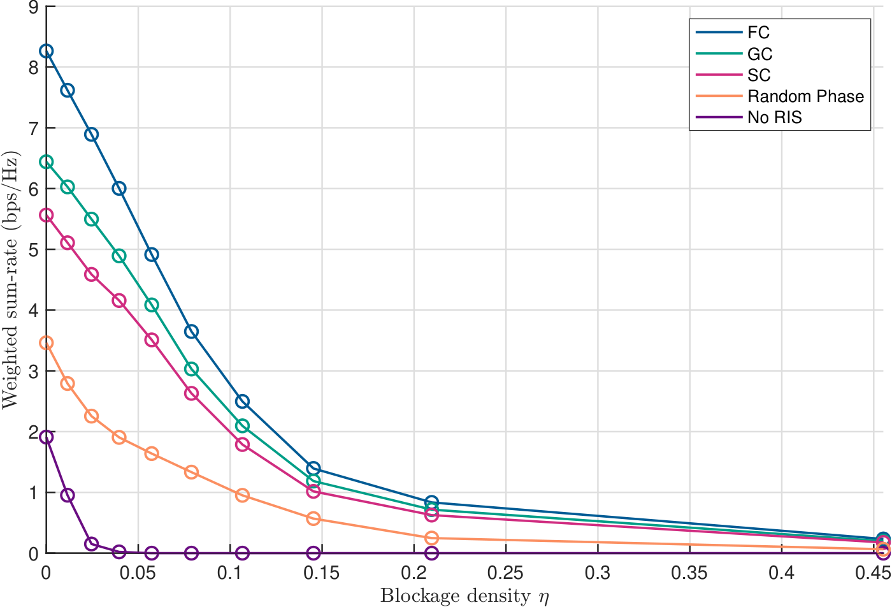
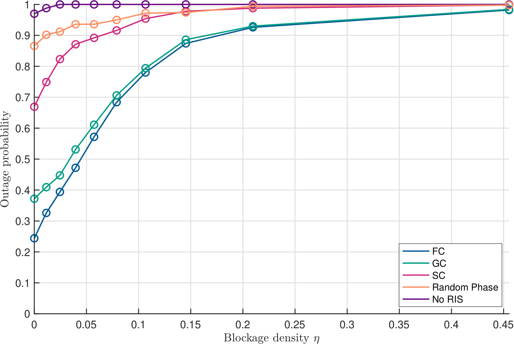
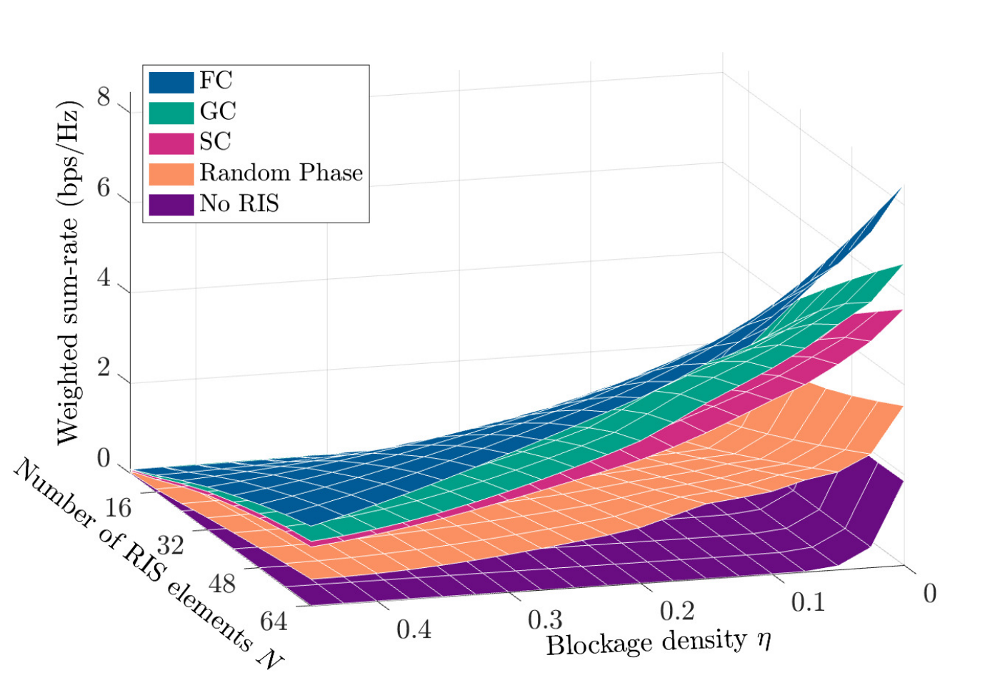
Explore the optimization algorithms (2)
The two routines connect the simulations to their mathematical implementation: Algorithm 1 optimizes the base station's transmitted signals, and Algorithm 2 jointly updates the transmit precoder and RIS configuration.
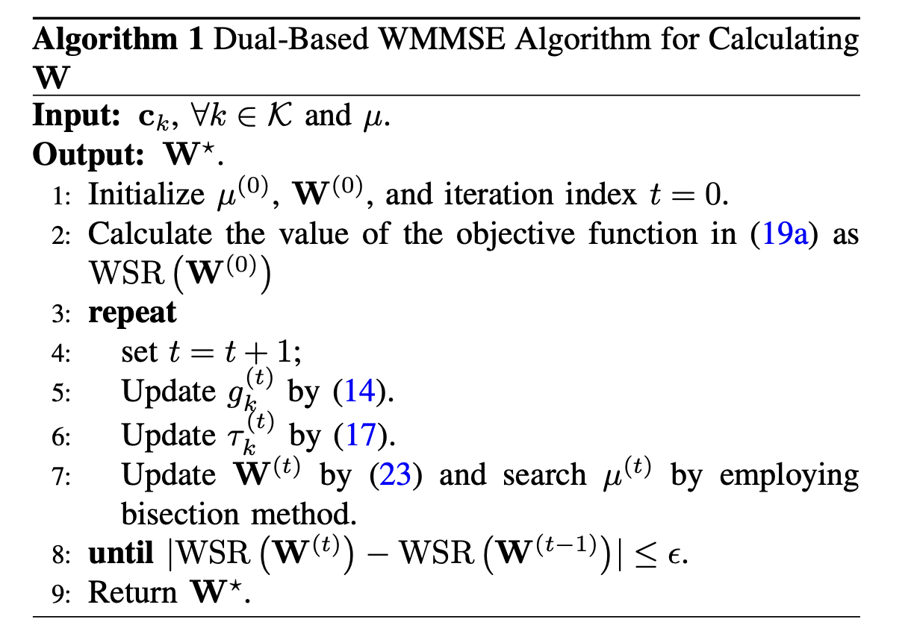
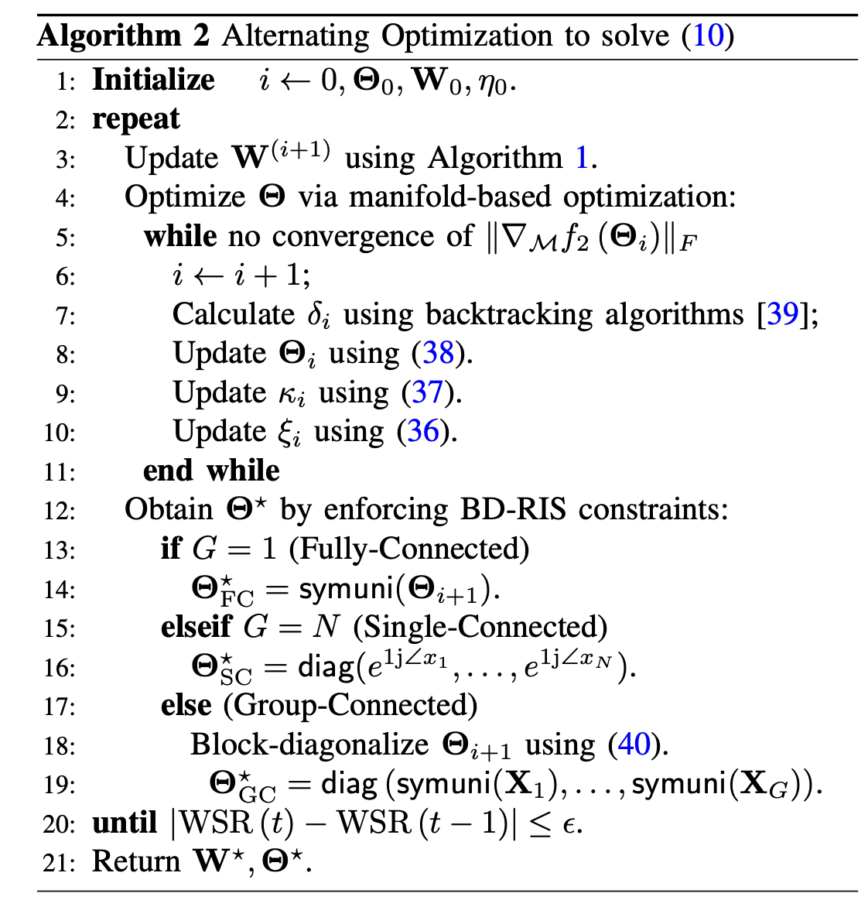